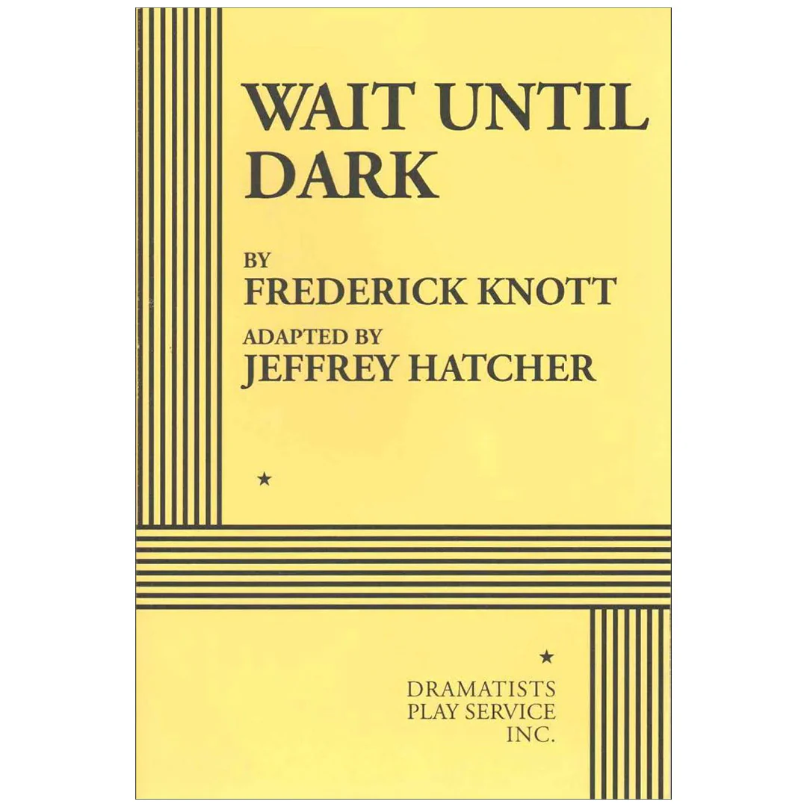
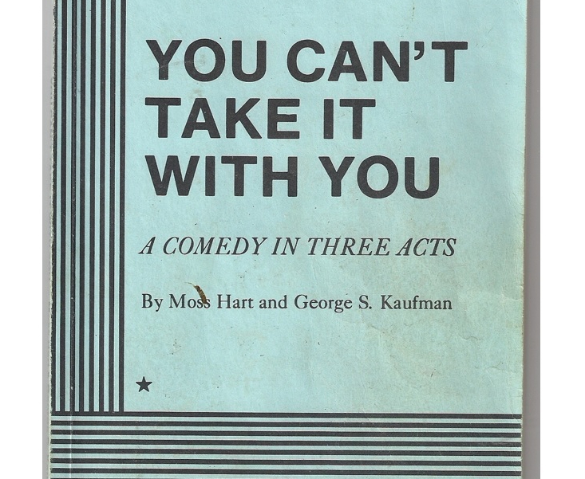
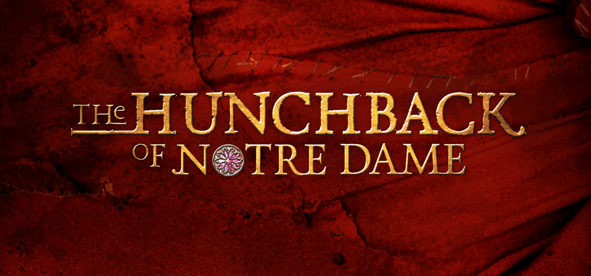

Script Archive
Favorite Scripts
-
Wait Until Dark- By Frederick Knott, Adapted by Jeffrey Hatcher

-
You Can’t Take It With You- by Moss Hart and George S. Kaufman

-
The Hunchback of Notre Dame- Music by Alan Menken, Lyrics by Stephen Schwartz, Book by Peter Parnell

Monolougues
-
From Sweeney Todd: The Demon Barber of Fleet Street
Pirelli: Ow, Call me Danny, Daniel O’Higgins the name when it’s not professional. It’s not much, but I suppose you’ll pretty it up a bit. I’d like me five quid back no, if’n you don’t mind. It’ll hold me over till your customers start coming. Then it’s half your profits delivered to me every week on Friday, share and share alike, isn’t that right… Mr. Benjamin Barker. You don’t remember me, why should you? I was just a wee Irish lad you hired for a couple o weeks. Sweep’n up hair and the like. But I remember these… and I remember you. Benjamin Barker. Later transported to Botany Bay for life. So, what’ll it be? Do we have a deal? Or should I go runnin’ down the street to me pal Beadle Bamford?
-
“Seminal Tragedy” by James Portnow, Adapted by Zander McFarland
Pourtales: Sazonov, you are a forward-thinking man. This is bigger than us all. I know I am overstepping my bounds, but this is our last chance. Call off the general mobilization. For God sakes, there will be no winner in this war! If we fight it will be revolution, it will be the end of monarchy, it will be the end of us both! Won’t you please call off this madness? If you do this, it will be slaughter. I beg of you in the name of all that is right and decent, call off this mobilization! … In that case, sir, I have the honor to inform you that we are at war. Never thought I’d be leaving Russia like this… I don’t know how I’ll be able to pack…
-
From A Midsummer Night’s Dream by William Shakespeare
Oberon: I know a bank where the wild thyme blows, Where oxlips and the nodding violet grows, Quite over-canopied with luscious woodbine, With sweet musk-roses and with eglantine: There sleeps Titania sometime of the night, Lull'd in these flowers with dances and delight; And there the snake throws her enamell'd skin, Weed wide enough to wrap a fairy in: And with the juice of this I'll streak her eyes, And make her full of hateful fantasies. Take thou some of it, and seek through this grove: A sweet Athenian lady is in love ith a disdainful youth: anoint his eyes; But do it when the next thing he espies May be the lady: thou shalt know the man By the Athenian garments he hath on.